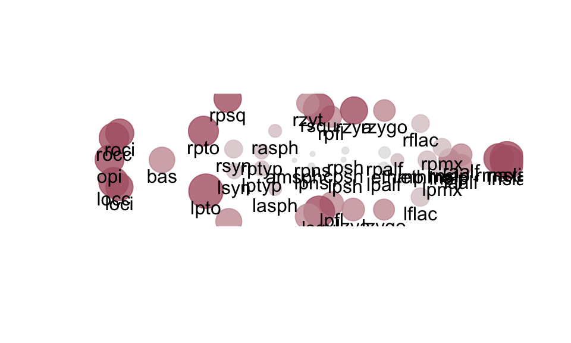
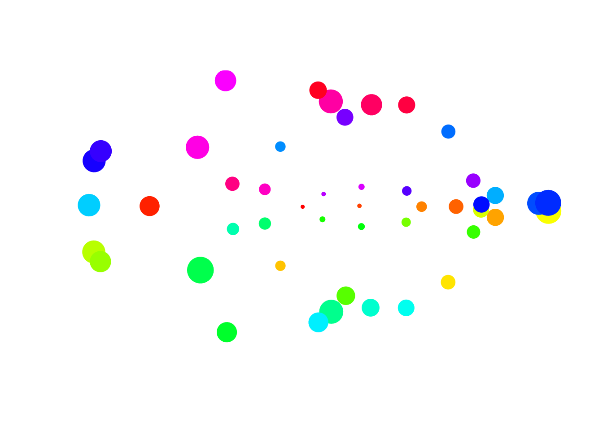
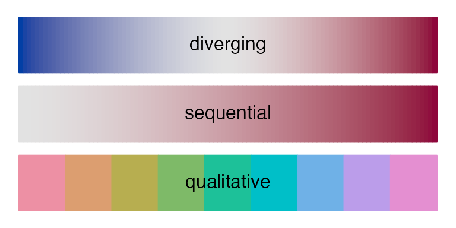
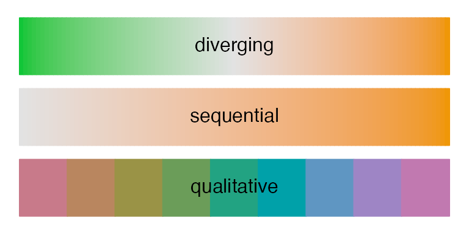
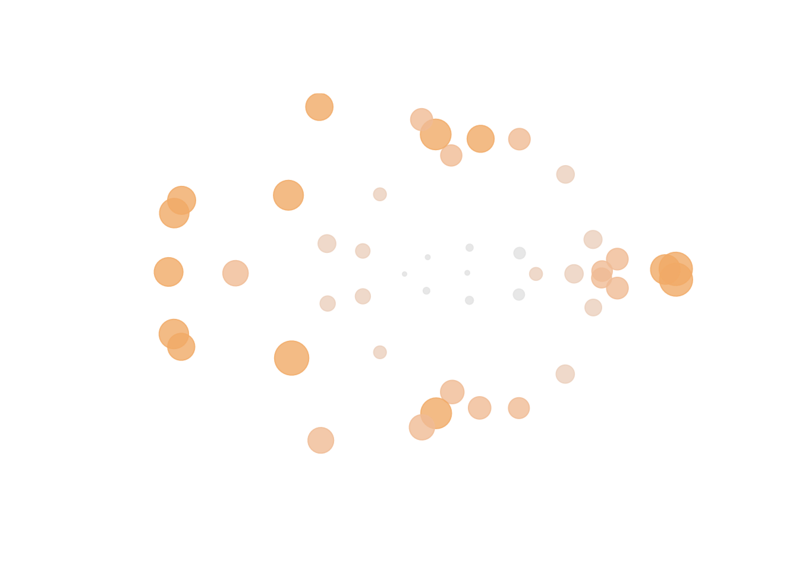

EDMA form matrix
Peter Solymos
edma02-form.RmdIntroduction
This tutorial explains how to use the EDMAinR package to fit a nonparametric model to landmark data and estimate the mean form.
Let’s load the package and read in an example data set:
library(EDMAinR)
#> EDMAinR 0.2-0 2021-11-04
file <- system.file("extdata/crouzon/Crouzon_P0_Global_MUT.xyz",
package="EDMAinR")
x <- read_xyz(file)Nonparametric fit
We use the edma_fit function to run the nonparametric estimation. The B argument is the number of bootstrap replicates to take (resampling the \(n\) specimens from object x with replacement). We chose a small number here, but B is ideally much higher (i.e. B=99):
fit <- edma_fit(x, B=9)
fit
#> EDMA nonparametric fit: Crouzon P0 MUT
#> Call: edma_fit(x = x, B = 9)
#> 47 landmarks, 3 dimensions, 28 specimens, 9 bootstrap runsThe nonparametric estimator gives the mean form matrix (\(\hat{M}\)) and \(\hat{\Sigma}_{K}^\ast\). We can extract these from the fitted model object (fit) using the Meanform and SigmaKstar functions:
str(Meanform(fit))
#> num [1:47, 1:3] -0.734 -4.238 0.566 2.778 1.99 ...
#> - attr(*, "dimnames")=List of 2
#> ..$ : chr [1:47] "amsph" "bas" "cpsh" "ethma" ...
#> ..$ : chr [1:3] "X" "Y" "Z"
str(SigmaKstar(fit))
#> num [1:47, 1:47] 0.000892 0.001559 -0.001256 -0.003276 -0.000797 ...
#> - attr(*, "dimnames")=List of 2
#> ..$ : chr [1:47] "amsph" "bas" "cpsh" "ethma" ...
#> ..$ : chr [1:47] "amsph" "bas" "cpsh" "ethma" ...Note: we are using the
strfunction to peek into the - otherwise huge - objects, just printing thestructure.
Form matrix
We can extract stacked Euclidean distances (the stacked form matrix \(FM\)) with the get_fm function. The functions allows to sort the table based on decreasing or increasing order by distance:
head(get_fm(fit))
#> row col dist lower upper
#> 1 bas amsph 3.577936 3.544238 3.593006
#> 2 cpsh amsph 1.540089 1.516862 1.547644
#> 3 ethma amsph 3.581924 3.532572 3.594558
#> 4 ethmp amsph 2.836499 2.809761 2.843809
#> 5 laalf amsph 4.422629 4.364985 4.438057
#> 6 lasph amsph 1.703182 1.692038 1.706379
head(get_fm(fit, sort=TRUE, decreasing=TRUE))
#> row col dist lower upper
#> 357 opi lnsla 10.51996 10.43197 10.57448
#> 855 rnsla opi 10.51282 10.43827 10.56389
#> 364 rocc lnsla 10.50282 10.40954 10.56432
#> 435 rnsla locc 10.50211 10.42761 10.54708
#> 342 locc lnsla 10.48118 10.39447 10.52831
#> 947 rocc rnsla 10.47022 10.39028 10.52702
head(get_fm(fit, sort=TRUE, decreasing=FALSE))
#> row col dist lower upper
#> 400 rnslp lnslp 0.1438078 0.1397477 0.1495684
#> 362 rnsla lnsla 0.2240747 0.2180288 0.2364729
#> 416 loci locc 0.5006441 0.4911260 0.5183610
#> 977 roci rocc 0.5033859 0.4838637 0.5265118
#> 127 rpsh cpsh 0.5262757 0.5117248 0.5335223
#> 105 lpsh cpsh 0.5750350 0.5637268 0.5836379The columns row and col refer to the landmark pairs. dist gives the Euclidean distance between the mean form corrdinates for the two landmarks. lower and upper indicates the 95% confidence limits based on the bootstrap distribution of the pairwise distances (from B replicates). The confidence level can be changed as get_fm(fit, level=0.9).
Visualizing the mean form
The 2D plot gives the projection of the mean form using multidimensional scaling (it uses \(FM\) based on \(\hat{M}\)). The dot size is proportional to SigmaKstar(fit) diagonal elements (scaling can be chosen by the cex argument). The plot_2d function returns the plotting coordinates, which can be used to add the landmark names:

library(rgl)
xyz <- plot_3d(fit)
text3d(xyz, texts=rownames(xyz), pos=1) # this adds names
decorate3d() # this adds the axes
rglwidget(width = 600, height = 600, reuse = FALSE)See ?rgl::plot3d for options to modify the 3D plot.
Changing the default colors
It is possible to supply your own color values to the plot_2d and plot_3d functions to allow full control:

An easier way, however, is to provide a color palette from the choices listed on the help page of the function ?hcl.colors. The available diverging color palettes are:
hcl.pals(type = "diverging")
#> [1] "Blue-Red" "Blue-Red 2" "Blue-Red 3" "Red-Green"
#> [5] "Purple-Green" "Purple-Brown" "Green-Brown" "Blue-Yellow 2"
#> [9] "Blue-Yellow 3" "Green-Orange" "Cyan-Magenta" "Tropic"
#> [13] "Broc" "Cork" "Vik" "Berlin"
#> [17] "Lisbon" "Tofino"The EDMAinR default palettes are stored as ‘options’.
getOption("edma_options")
#> $diverging
#> [1] "Blue-Red"
#>
#> $qualitative
#> [1] "Set 2"The default palettes produces these colors:
plot_edma_colors(101)
Here is how to change the default palette:
op <- options("edma_options" = list(
diverging = "Green-Orange",
qualitative = "Dark 2"))
op
#> $edma_options
#> $edma_options$diverging
#> [1] "Blue-Red"
#>
#> $edma_options$qualitative
#> [1] "Set 2"This produces the following palettes:

plot_2d(fit, cex=2)
Note: we are only using the ‘high’ end of the palette because the dots are scaled by standard deviation like measure based on
sqrt(diag(SigmaKstar(fit))).
We can reset the defaults using the op list that we saved before:
options(op)